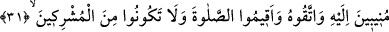
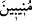

“İşte;” yüzün kendisine çevrilmesi emredilen din, âyetteki teşvikten (iğrâ) anlaşılan
Allâh’ın fıtratına sarılmak veya millet/din olarak tefsir edilecek olursa fıtrat, kendisinde
hiçbir eğrilik olmayan “dosdoğru din budur; fakat insanların çoğu” Mekke’nin
kâfirleri onun dosdoğru olduğunu “bilmezler.” Onun için de ondan yüz çevirip saparlar.
Bu ise onların düşünüp tefekkür etmediklerindendir.
31. Hepiniz O’na yönelerek O’na karşı gelmekten sakının, namazı kılın;
müşriklerden olmayın.
“Hepiniz O’na yönelerek” “ kelimesi, tekrar tekrar geri döndü/yöneldi
anlamındaki “ kelimesinden türemiştir. Mânâ; ‘Fıtrata sarılın, Allah Teâlâ’ya ve
O’nun emrettiği herşeye döndüğünüz ve tâatlerle O’na yöneldiğiniz halde yüzlerinizi
dîne çevirin’ demektir.
Şeyh Ebû Saîd Harrâz (k.s.) şöyle buyurmuştur: “İnâbe, halktan yine Hakk’a
dönüştür. Münîb, Hak Sübhânehû ve Teâlâ’dan başka mercî tanımayan kimseye denir.”
Ey Rabbim, sen herkesin merciisin, ben kime rücû edeyim?
Eğer beni kabul etmeyecek olursan, nereye giderim, ne yaparım?
İbn Atâ (k.s.) âyetin bu kısmı hakkında şöyle demiştir. “Her şeyden, özellikle
nefislerin zulümâtından/karanlıklarından O’na dönerek, kulluk âdâbı sınırı üzere
O’nunla birlikte durarak, hiçbir halde O’nun huzurundan ayrılmayarak ve O’ndan
başkasından korkmayarak”
İbrahim b. Edhem (k.s.) da şöyle demiştir: “Kul tevbesinde sâdık olduğu zaman
Allâh’a yönelmiş bir kimse/münîb olur. Çünki inâbe, tevbenin ikinci derecesidir.”
“O’na karşı gelmekten” yâni O’nun emrine muhalefet etmekten “sakının, namazı
kılın;” şartları ve hukuku üzere vakitlerinde edâ edin.
Râğıb der ki: “Bir şeyi ikame etmek, hakkını tam olarak vermektir. Allah Teâlâ
namazdan maksadın onun şekille ilgili unsurlarını yapmak değil, şartlarını tam olarak
yerine getirmek olduğuna dikkat çekmek için namazı emrettiği ve medhettiği yerlerde
ancak ‘ikame’ lafzını kullanmıştır.”
Allâh’ın fıtratını değiştiren “müşriklerden olmayın.”
Kâşifî der ki: “Bilerek namazı terk ederek müşriklerden olmayın.” Bu hitap
ümmetedir.
et-Teysîr’de Şeyh Muhammed Eslem Tûsî (r.h.)’den şöyle nakledilir: “Bana ulaşan
bir hadiste Hz. Peygamber (s.a.): “Benden bir hadis rivâyet edildiğinde onu Allâh’ın
Kitabına arz ediniz. Eğer Kur’ân’a muvafık ise kabul ediniz.”[35] buyurmuştur. Ben,